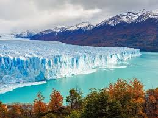

A forest is a piece of land with many trees. Forests are important and grow in many places around the world. They are an ecosystem which includes many plants and animals. Many animals live in forests and need them to survive.

A glacier is a large, perennial accumulation of crystalline ice, snow, rock, sediment, and often liquid water that originates on land and moves down slope under the influence of its own weight and gravity.